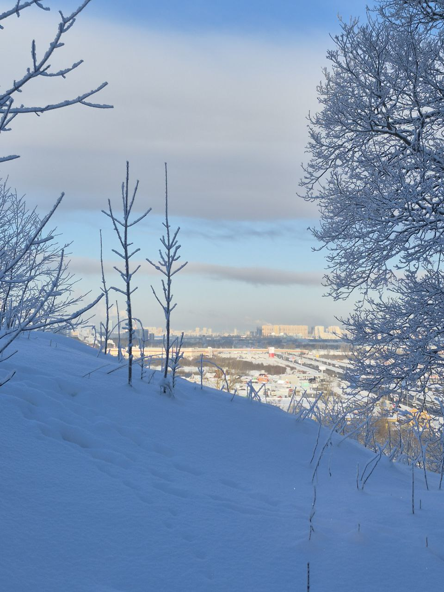

Как устроено?
Основной круговой маршрут + три трека (Промка / История / Природа), которые помогают «читать» место по-разному.

Проект "Остров Дудергоф"
Основной круговой маршрут + три трека (Промка / История / Природа), которые помогают «читать» место по-разному.
Наш проект охватывает южную часть Ленинградской области — территорию Пулковских и Дудергофских высот, лежащую между Павловском и Пушкиным, Красным Селом и Можайским. Высоты вытянуты дугой с запада на восток и образуют природный рубеж между городской застройкой и открытыми пространствами области. Отсюда, с возвышенных точек, раскрываются дальние панорамы: исторический центр Санкт-Петербурга, современный гигант Лахта-центр. Здесь дороги растворяются в рельефе, а линия горизонта лежит на ладони. Пулковские и Дудергофские холмы связывают между собой исторические пригороды и природные территории, создавая цельное пространство, где город остаётся внизу, а над ним начинается тишина и воздух. Это место на границе: между городом и областью, между равниной и возвышенностью, между повседневным маршрутом и пространством созерцания.
Здесь — место под ключевое изображение маршрута (схема / фото / постер).

Пройдите круг целиком или выберите кусок под время и настроение. Ниже — быстрый выбор трека.
Нажмите на карточку — переход к разделу трека (пока это якоря, потом можно заменить на отдельные страницы).
Короткое описание. Здесь можно будет добавить карту, точки и фото.
Добавьте 2–4 удобных старта, парковки/остановки, навигацию.
Кому подходит, сколько времени, что важно увидеть.


Ландшафты, рельеф, лес, тихие точки, панорамы.
Смотровые, места отдыха, «кадры» маршрута.
Правила, сезонность, аккуратная инфраструктура.


Исторический слой: памятные места, хроника, маршруты прошлого.
Какие истории «держат» трек, как их рассказывать в точках.
Место под графику, ссылки на материалы, архивы.

Индустриальный слой: инфраструктура, материалы, границы, видовые точки.
Список объектов/фрагментов, которые показывают «промку».
Как обозначать трек на местности и в навигации.

Блок под фото и текст: что это, где находится, как использовать.
Здесь можно описать формат: сцена/видовая площадка/место отдыха, а также добавить расписание или ссылку на анонсы.
Секторы, которые связаны с вашим большим проектом.